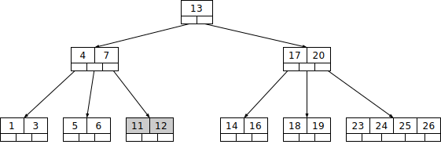
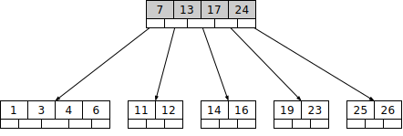

B 树
引入
B 树（B-tree）是一种自平衡的搜索树，能够保持数据有序。这种数据结构能够让查找数据、顺序访问、插入数据及删除的动作，都在对数时间内完成。B 树的每个节点可以拥有两个以上的子节点，因此 B 树是一种多路搜索树。
在 B 树中，有两种节点：
- 内部节点（internal node）：存储了数据以及指向其子节点的指针。
- 叶子节点（leaf node）：与内部节点不同的是，叶子节点只存储数据，并没有子节点。
性质
首先介绍一下一棵
- 每个节点最多有
个子节点。 - 每一个非叶子节点（除根节点）最少有
个子节点。 - 如果根节点不是叶子节点，那么它至少有两个子节点。
- 有
个子节点的非叶子节点拥有 个元素，且升序排列，满足 。 - 所有的叶子节点都在同一层。
一个简单的 5 阶 B 树的图例如下：

过程
与 二叉搜索树 类似，B 树的基本操作有查找，遍历，插入，删除。
以下的描述中，用「元素」一词指代节点内部所保存的数据。在其它的数据结构教程中，可能也会使用「关键字」、「键」、「关键码」等表述，它们的含义都相同。
查找
B 树中的节点包含有多个元素。假设需要查找的是
实现
遍历
B 树的中序遍历与二叉搜索树的中序遍历也很相似，从最左边的孩子节点开始，递归地打印最左边的孩子节点，然后对剩余的孩子和元素重复相同的过程。最后，递归打印最右边的孩子节点。
遍历的代码如下：
实现
插入
为了方便表述，插入设定为在以
一个新插入的
与二叉搜索树不同的是，B 树每个节点可以包含的子节点和元素个数都有一个取值范围。因此，在插入一个新节点时，就需要确认插入这个叶子节点之后，它的父节点是否超出该节点本身最大可容纳的节点个数。
针对一棵高度为
- 如果叶子节点空间足够，即该节点包含的元素个数小于
，则直接插入在叶子节点的左边或右边； - 如果空间满了以至于没有足够的空间去添加新的元素，即该节点的元素已经有了
个，则需要将该节点进行「分裂」，将一半数量的元素分裂到新的其相邻右节点中，中间元素上移到父节点中，而且当节点中关键元素向右移动了，相关的指针也需要向右移。 - 从该节点的原有元素和新的元素中选择出中位数
- 小于这一中位数的元素放入左边节点，大于这一中位数的元素放入右边节点，中位数作为分隔值。
- 分隔值被插入到父节点中，这可能会造成父节点分裂，分裂父节点时可能又会使它的父节点分裂，以此类推。如果没有父节点（这一节点是根节点），就创建一个新的根节点（增加了树的高度）。
如果一直分裂到根节点，那么就需要创建一个新的根节点。它有一个分隔值和两个子节点。这就是根节点并不像内部节点一样有最少子节点数量限制的原因。
不难验证，分裂之后左、右孩子含有的元素数量仍然符合
如果
插入的代码如下：
实现
void BTree::insert(int k) {
// 如果树为空树
if (root == NULL) {
// 为根节点分配空间
root = new BTreeNode(t, true);
root->keys[0] = k; // 插入节点 k
root->n = 1; // 更新根节点的元素个数为 1
} else {
// 当根节点已满，则对B-树进行生长操作
if (root->n == 2 * t - 1) {
// 为新的根节点分配空间
BTreeNode *s = new BTreeNode(t, false);
// 将旧的根节点作为新的根节点的孩子
s->C[0] = root;
// 将旧的根节点分裂为两个，并将一个元素上移到新的根节点
s->splitChild(0, root);
// 新的根节点有两个孩子节点
// 确定哪一个孩子将拥有新插入的元素
int i = 0;
if (s->keys[0] < k) i++;
s->C[i]->insertNonFull(k);
// 新的根节点更新为 s
root = s;
} else // 根节点未满，调用 insertNonFull() 函数进行插入
root->insertNonFull(k);
}
}
// 将元素 k 插入到一个未满的节点中
void BTreeNode::insertNonFull(int k) {
// 初始化 i 为节点中的最后一个元素的位置
int i = n - 1;
// 如果当前节点是叶子节点
if (leaf == true) {
// 下面的循环做两件事：
// a) 找到新插入的元素位置并插入
// b) 移动所有大于元素 k 的向后移动一个位置
while (i >= 0 && keys[i] > k) {
keys[i + 1] = keys[i];
i--;
}
// 插入新的元素，节点包含的元素个数加 1
keys[i + 1] = k;
n = n + 1;
} else {
// 找到第一个大于元素 k 的元素 keys[i] 的孩子节点
while (i >= 0 && keys[i] > k) i--;
// 检查孩子节点是否已满
if (C[i + 1]->n == 2 * t - 1) {
// 如果已满，则进行分裂操作
splitChild(i + 1, C[i + 1]);
// 分裂后，C[i] 中间的元素上移到父节点，
// C[i] 分裂称为两个孩子节点
// 找到新插入元素应该插入的节点位置
if (keys[i + 1] < k) i++;
}
C[i + 1]->insertNonFull(k);
}
}
// 节点 y 已满，则分裂节点 y
void BTreeNode::splitChild(int i, BTreeNode *y) {
// 创建一个新的节点存储 t - 1 个元素
BTreeNode *z = new BTreeNode(y->t, y->leaf);
z->n = t - 1;
// 将节点 y 的后 t -1 个元素拷贝到 z 中
for (int j = 0; j < t - 1; j++) z->keys[j] = y->keys[j + t];
// 如果 y 不是叶子节点，拷贝 y 的后 t 个孩子节点到 z中
if (y->leaf == false) {
for (int j = 0; j < t; j++) z->C[j] = y->C[j + t];
}
// 将 y 所包含的元素的个数设置为 t -1
// 因为已满则为2t -1 ，节点 z 中包含 t - 1 个
// 一个元素需要上移
// 所以 y 中包含的元素变为 2t-1 - (t-1) -1
y->n = t - 1;
// 给当前节点的指针分配新的空间，
// 因为有新的元素加入，父节点将多一个孩子。
for (int j = n; j >= i + 1; j--) C[j + 1] = C[j];
// 当前节点的下一个孩子设置为z
C[i + 1] = z;
// 将所有父节点中比上移的元素大的元素后移
// 找到上移节点的元素的位置
for (int j = n - 1; j >= i; j--) keys[j + 1] = keys[j];
// 拷贝 y 的中间元素到其父节点中
keys[i] = y->keys[t - 1];
// 当前节点包含的元素个数加 1
n = n + 1;
}
删除
B 树的删除操作相比于插入操作更为复杂，因为删除之后经常需要重新排列节点。
与 B 树的插入操作类似，必须确保删除操作不违背 B 树的特性。正如插入操作中每一个节点所包含的元素的个数不能超过
有两种常用的删除策略：
- 定位并删除元素，然后调整树使它满足约束条件。
- 从上到下处理这棵树，在进入一个节点之前，调整树使得之后一旦遇到了要删除的元素，它可以被直接删除而不需要再进行调整。
下面介绍使用第一种策略的删除。
首先，查找 B 树中需删除的元素，如果该元素在 B 树中存在，则将该元素在其节点中进行删除；删除该元素后，首先判断该元素是否有左右孩子节点。如果有，则上移孩子节点中的某相近元素（「左孩子最右边的节点」或「右孩子最左边的节点」）到父节点中，然后是移动之后的情况；如果没有，直接删除。
- 某节点中元素数目小于
， 向上取整，则需要看其某相邻兄弟节点是否丰满。 - 如果丰满（节点中元素个数大于
），则向父节点借一个元素来满足条件。 - 如果其相邻兄弟都不丰满，即其节点数目等于
，则该节点与其相邻的某一兄弟节点进行「合并」成一个节点。
接下来用一个 5 阶 B 树为例，详细讲解删除的操作。

如图所示，接下来要依次删除 8，20，18，5。
首先要删除元素 8。先查找到元素 8 在叶子节点中，删除 8 后叶子节点的元素个数为 2，符合 B 树的规则。然后需要把元素 11 和 12 都向前移动一位。完成后如图所示。

下一步，删除 20，因为 20 没有在叶子节点中，而是在中间节点中找到，可以发现 20 的继承者是 23（字母升序的下个元素），然后需要将 23 上移到 20 的位置，之后将孩子节点中的 23 进行删除。
删除后检查一下，该孩子节点中元素个数大于 2，无需进行合并操作。
所以这一步之后，B 树如下图所示。

下一步删除 18，18 在叶子节点中，但是该节点中元素数目为 2，删除导致只有 1 个元素，已经小于最小元素数目 2。
而由前面已经知道：如果其某个相邻兄弟节点中比较丰满（元素个数大于
在这个实例中，右相邻兄弟节点中比较丰满（3 个元素大于 2），所以先向父节点借一个元素 23 下移到该叶子节点中，代替原来 19 的位置。19 前移。
然后 24 在相邻右兄弟节点中，需要上移到父节点中。最后在相邻右兄弟节点中删除 24，后面的元素前移。
这一步之后，B 树如下图所示。

最后一步需要删除元素 5，但是删除后会导致很多问题。因为 5 所在的节点数目刚好达标也就是刚好满足最小元素个数 2。
而相邻的兄弟节点也是同样的情况，删除一个元素都不能满足条件，所以需要该节点与某相邻兄弟节点进行合并操作；首先移动父节点中的元素（该元素在两个需要合并的两个节点元素之间）下移到其子节点中。
然后将这两个节点进行合并成一个节点。所以在该实例中，首先将父节点中的元素 4 下移到已经删除 5 而只有 6 的节点中，然后将含有 4 和 6 的节点和含有 1，3 的相邻兄弟节点进行合并成一个节点。
这一步之后，B 树如下图所示。

但是这里观察到父节点只包含了一个元素 7，这就没有达标（因为非根节点包括叶子节点的元素数量
如果这个问题节点的相邻兄弟比较丰满，则可以向父节点借一个元素。而此时兄弟节点元素刚好为 2，刚刚满足，只能进行合并，而根节点中的唯一元素 13 下移到子节点。这样，树的高度减少一层。
所以最终的效果如下图。

删除的伪代码如下：
实现
B-Tree-Delete-Key(x, k)
if not leaf[x] then
y ← Preceding-Child(x)
z ← Successor-Child(x)
if n[[y] > t − 1 then
k' ← Find-Predecessor-Key(k, x)]()
Move-Key(k', y, x)
Move-Key(k, x, z)
B-Tree-Delete-Key(k, z)
else if n[z] > t − 1 then
k' ← Find-Successor-Key(k, x)
Move-Key(k', z, x)
Move-Key(k, x, y)
B-Tree-Delete-Key(k, y)
else
Move-Key(k, x, y)
Merge-Nodes(y, z)
B-Tree-Delete-Key(k, y)
else (leaf node)
y ← Preceding-Child(x)
z ← Successor-Child(x)
w ← root(x)
v ← RootKey(x)
if n[x] > t − 1 then Remove-Key(k, x)
else if n[y] > t − 1 then
k' ← Find-Predecessor-Key(w, v)
Move-Key(k', y,w)
k' ← Find-Successor-Key(w, v)
Move-Key(k',w, x)
B-Tree-Delete-Key(k, x)
else if n[w] > t − 1 then
k' ← Find-Successor-Key(w, v)
Move-Key(k', z,w)
k' ← Find-Predecessor-Key(w, v)
Move-Key(k',w, x)
B-Tree-Delete-Key(k, x)
else
s ← Find-Sibling(w)
w' ← root(w)
if n[w'] = t − 1 then
Merge-Nodes(w',w)
Merge-Nodes(w, s)
B-Tree-Delete-Key(k, x)
else
Move-Key(v,w, x)
B-Tree-Delete-Key(k, x)
B 树优势
之前已经介绍过二叉查找树。但是这类型数据结构的问题在于，由于每个节点只能容纳一个数据，导致树的高度很高，逻辑上挨着的节点数据可能离得很远。
考虑在磁盘中存储数据的情况，与内存相比，读写磁盘有以下不同点：
- 读写磁盘的速度相比内存读写慢很多。
- 每次读写磁盘的单位要比读写内存的最小单位大很多。
由于读写磁盘的这个特点，因此对应的数据结构应该尽量的满足「局部性原理」：「当一个数据被用到时，其附近的数据也通常会马上被使用」，为了满足局部性原理，所以应该将逻辑上相邻的数据在物理上也尽量存储在一起。这样才能减少读写磁盘的数量。
所以，对比起一个节点只能存储一个数据的 BST 类数据结构来，要求这种数据结构在形状上更「胖」、更加「扁平」，即：每个节点能容纳更多的数据，这样就能降低树的高度，同时让逻辑上相邻的数据都能尽量存储在物理上也相邻的硬盘空间上，减少磁盘读写。
参考资料
创建日期: 2022年9月1日